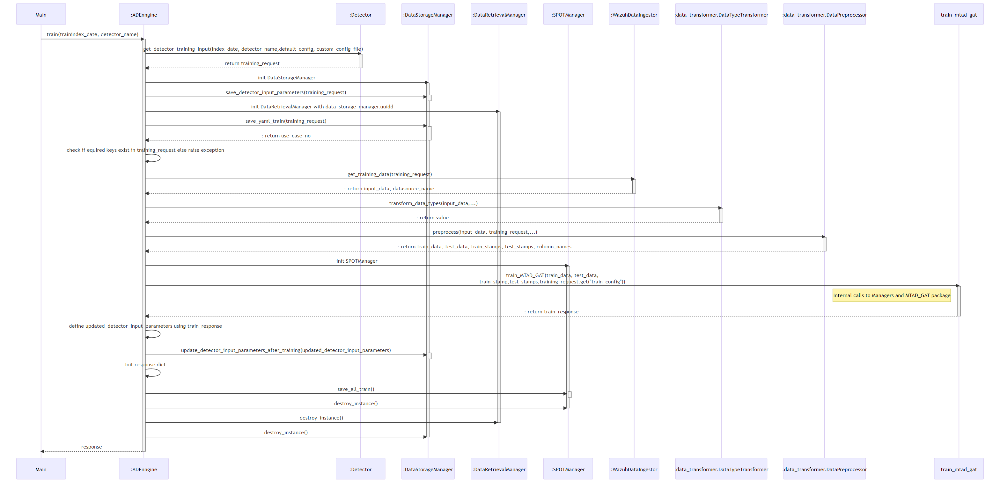
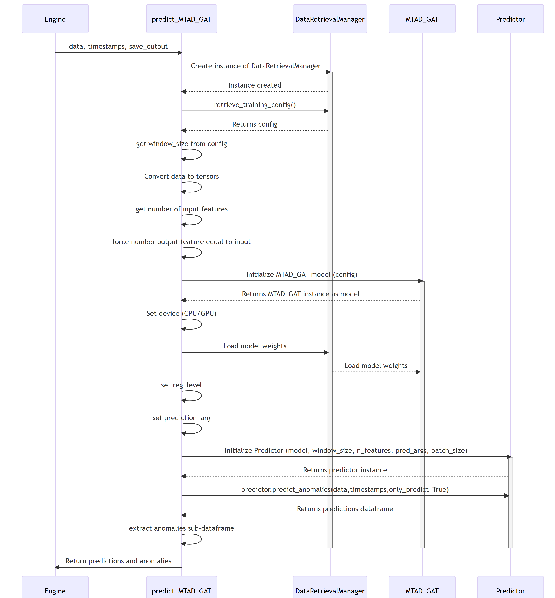

1.0 Training pipeline SWD-001
Training sequence diagram
The diagram depicts the sequence of operations of the training pipeline, orchestrated by the ADBox Engine.

Parent links: LARC-001 Training pipeline flow
2.0 Prediction pipeline SWD-002
Prediction pipeline sequence diagram
The diagram depicts the sequence of operations in the prediction pipeline, orchestrated by the ADBox Engine.

Parent links: LARC-002 Historical data prediction pipeline flow, LARC-008 Batch and real-time prediction flow
3.0 MTAD GAT training SWD-003
MTAD GAT training sequence diagram
The diagram depicts the sequence of operations run by the function train_MTAD_GAT of the MTAD_GAT ML-subpackage of ADBox.
Parent links: LARC-009 ADBox machine learning package
4.0 MTAD GAT prediction SWD-004
MTAD GAT prediction sequence diagram
The diagram depicts the sequence of operations run by the function predict_MTAD_GAT of the MTAD_GAT ML-subpackage of ADBOX.

Parent links: LARC-009 ADBox machine learning package
5.0 Peak-over-threshold SWD-005
POT evaluation sequence diagram
The diagram depicts the sequence of operations run by the function pot_eval of the MTAD_GAT subpackage of ADBox.
This function runs the dynamic POT (i.e., peak-over-threshold) evaluation.
Parent links: LARC-009 ADBox machine learning package
6.0 Predictor score computation SWD-006
Predictor score computation sequence diagram
The diagram depicts the sequence of operations run by the function get_score method of the Predictor class in the MTAD GAT PyTorch subpackage of ADBox.

Parent links: LARC-009 ADBox machine learning package
7.0 ADBox MTAD GAT anomaly prediction SWD-007
ADBox MTAD GAT anomaly prediction sequence diagram
The diagram depicts the sequence of operations run by the function predict_anomalies method of the Predictor class in the MTAD GAT PyTorch subpackage of ADBox.
Parent links: LARC-009 ADBox machine learning package
8.0 ADBox MTAD GAT Predictor SWD-008
ADBox MTAD GAT Predictor class diagram
The diagram below depicts the Predictor class of the MTAD GAT PyTorch subpackage of ADBox.

Parent links: LARC-009 ADBox machine learning package
9.0 ADBox data managers SWD-009
ADBox data manager class diagrams
The diagram below depicts the Data manager classes of ADBox, all designed and implemented as Singleton classes.

Parent links: LARC-010 ADBox data manager
10 ADBox data transformer SWD-010
ADBox data transformer class diagram
The diagram below depicts the Data Transformer class of ADBox.
Parent links: LARC-003 Preprocessing flow
11 ADBox preprocessing SWD-011
ADBox preprocessing sequence diagram
The diagram summarizes the sequence of actions of the method Preprocessor.preprocessing in the ADBox DataTransformer.
Parent links: LARC-003 Preprocessing flow